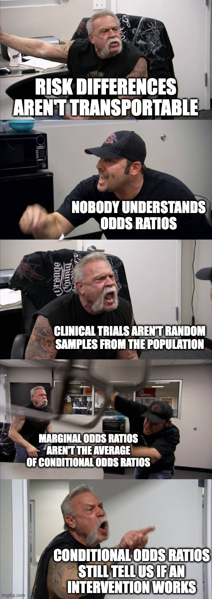

You are what you ATE: Choosing an effect size measure for binary outcomes
r
statistics
Author
Cameron Patrick
Published
July 13, 2023
Abstract
Wherein I try to make sense of ongoing debates in the statistical community about how to analyse and report clinical trials targeting binary outcomes, and then write some R code to practice what I hesitantly preach.
The great odds ratio debate (with memes)
A lot of noise has been made about why an odds ratio may not be a desirable summary for a treatment effect on a binary variable1. There is that pesky problem that normal humans are unable to correctly interpret an odds ratio (Altman et al., 1998). In recent years, people2 have become more aware of the mathematical fact of noncollapsibility (Daniel et al., 2021; Greenland et al., 1999; Morris et al., 2022): the marginal3 odds ratio (population-level odds ratio) is not any kind of average of conditional odds ratios (individual-level odds ratios)4. The ICH E9(R1) estimand framework for clinical trials requires a “population-level summary”. In the language of causal inference, that’s describing an Average Treatment Effect (ATE), and the odds ratio isn’t one5.
Risk differences (the difference in probability attributable to a particular treatment) and relative risks (the ratio of probabilities due to a particular treatment) avoid these problems of odds ratios. However, statisticians are usually taught to analyse binary outcomes using logistic regression, the direct output6 of which is odds ratios. Someone on Stats Twitter rediscovers all of this every few months and starts a heated argument where nobody goes away happy.
Surprisingly, many statisticians prefer collapsibility.
Personally, I’m a fan of risk differences for communicating potential risks to an individual, ideally presented alongside the baseline level of risk. There’s some evidence that patients and clinicians find these measures easier to interpret than relative measures (Zipkin et al., 2014), especially when presented in the form of a natural frequency, like “6 in 1000 people” rather than “0.6%”.
Statistical analyses are often adjusted for covariates, either to reduce confounding (in observational studies) or improve power (in randomised trials). There are some technical challenges when doing this with risk differences and relative risks. Adjusting for covariates requires specifying some kind of model. If we’re using a generalised linear model7, the natural mathematical form of covariate adjustment will depend on whether you are modelling log-odds (logistic regression model, where model parameters correspond to an odds ratio), probability (linear probability model, where model parameters correspond to a risk difference) or log-probability (quasi-Poisson or log-link binomial model, where model parameters correspond to a relative risk). When modelling risk differences or relative risks directly, it’s possible to end up with impossible predicted probabilities: “probabilities” which are less than zero or greater than one. Using logistic regression avoids this problem, because any real number on the log-odds scale translates to a probability between zero and one. Any odds ratio can be applied to any level of baseline risk without making mathematicians sad8.
There are also compelling — but not universally accepted — arguments that despite the difficulty in interpreting odds ratios, they are more likely to be transportable between different levels of baseline risk than risk differences or relative risks (Doi et al., 2022; Senn, 2011). This is an empirical matter, not a mathematical one, and the evidence is not clear-cut. If we accept this, though, it is another reason to prefer logistic regression for statistical modelling. Effect size measures being “transportable” is another way of saying that the effects are closer to being additive on the scale that effect measure lives on (probability, log-probability, or log-odds). In the context of regression models, using a scale where the effect size is more transportable reduces the need for interaction terms, which can only be estimated well in large samples.
Thus we have a dilemma: people understand risk differences and (to a lesser extent) relative risks, but they can be problematic to estimate with covariate adjustment; nobody understands odds ratios9, but logistic regression is probably a better model, operating closer to a scale on which the underlying effects are additive. One possible way out is to model the data using logistic regression, and then use that model to produce other quantities of interest. This approach is described in Permutt (2020), which has some of the best writing I’ve encountered in a statistics paper — being written in the form of a dialogue between a randomiser (the “causal inference” perspective) and a parameteriser (the “statistical modelling” perspective) walking through the Garden of Eden, planning to conduct and analyse a clinical trial.
Permutt (2020) also considered what information different audiences might want from the results of a clinical trial: regulator, patient, and scientist. There’s a fourth audience which I think is worth considering, only very briefly mentioned by Permutt: the meta-analyst, trying to aggregate information from multiple trials.
Permutt argues in favour of the ATE being the main quantity of regulatory interest:
The average treatment effect should be of regulatory interest, however. The primary analysis of outcome should be of a variable that is reasonably linear in utility to the patient. Then, if and only if the average effect is positive, the ensemble of patients can be said to be better off under the test condition than under the control. This is perhaps the weakest imaginable statistical condition for approval of a drug product, but it is surely a necessary condition.
Permutt notes that studies designed to be able to detect average treatment effects are unlikely to be adequate for patient-specific decision making or providing a more detailed scientific understanding.
Marginal adjusted estimates may be robust, but may not accurately estimate RD for either any patient in the RCT or for the clinical population to which RCT results are to be applied, because in effect they assume that the RCT sample is a random sample from the clinical population, something not required and never realized for RCTs.
This refers to the distinction between the population average treatment effect (PATE) and the sample average treatment effect (SATE). RCT participants are not random samples from any population, not even from the eligible pool of participants for a particular study. But the regulator’s decision that Permutt described earlier is motivated by generalising to a broader population, implicitly relying on properties of the PATE. It’s not clear to me whether there are likely to be any real-world scenarios where both (1) the practical conclusions drawn from the SATE and PATE would be different; and (2) the conditional odds ratio derived from the RCT sample is in agreement with the PATE but the risk difference SATE is not.
I am a coward and not (yet?) willing to take a strong position in this fight, but am always sympathetic to the idea that a single number is rarely sufficient to describe scientific evidence (see also: p-values). At some point I might write another blog about Harrell’s idea of plotting the distribution of estimated patient-level treatment effects, which is intriguing, although I struggle to see the practical purpose of it. Harrell’s other writing on this topic is also worth reading:
Unadjusted Odds Ratios are Conditional demonstrates noncollapsibility and argues that conditional odds ratios are more useful than marginal odds ratios.
One issue which I remain unclear about is whether randomised trials powered to detect main treatment effects are likely to reasonably estimate patient-specific baseline risk — a simpler task than patient-specific treatment effects, but still outside of the usual design remit for an efficacy trial. Common analytical approaches for clinical trials have good properties for estimating average treatment effects when the covariates are regarded as nuisance parameters (White et al., 2021), but are not guaranteed to perform so well if the effects of the covariates are themselves of interest.
Finally, there is the meta-analytic perspective to consider. An effect size which is less heterogeneous between studies is once again desirable. If arguments about the transportability of odds ratios by the Harrell, Senn, Doi, and others are to be believed, we should report odds ratios, as those are likely to be the most useful for meta-analysts. There is some merit in reporting all commonly-used effect size measures: risk difference, relative risk, and odds ratio. This provides the most flexibility for future meta-analysts.
If all of that was a bit much to take in, maybe this will help:

True facts on both sides.
In the rest of this post I’ll demonstrate how odds ratios are noncollapsible and show how to calculate risk differences and relative risks from logistic regression models using R and the marginaleffects package.
An example
This is the story of some hypothetical researchers who did a randomised controlled trial (RCT) where 560 patients were randomly assigned to either a treatment or control condition. The primary outcome of the trial was a binary measure, indicating whether a patient’s condition had worsened after 6 weeks. The scenario is based on one from Frank Harrell’s blog, with the details changed and embellished.
The hidden R code block below loads some R packages and sets up some simulated data for this trial.
Looking at a 2-way table of our hypothetical trial, we can see that the worse outcome (“1”) is more common in the control group (37%) than the treatment group (30%). This is an absolute risk reduction of 7%, a promising sign that our treatment may be beneficial.
Just looking at a table won’t convince anybody, though. At this point, our hypothetical trialists asked a statistician to help out10. Taking the role of the hypothetical statistician, we’ll need to estimate the treatment effect in some way that also quantifies our uncertainty. Let’s fit a binary logistic regression model to this data to examine the effect our treatment had on the outcome.
The table below shows the results of this logistic regression: an odds ratio of 0.73 (95% CI: 0.51 to 1.03). The odds ratio being less than 1 indicates that the treatment was beneficial (since the outcome occurring was bad, in this case) but the p-value of 0.074 indicates this effect is not statistically significant. The trialists were sad, their dreams of publishing in the British Medical Journal scuppered.
tbl_regression(lrm_unadj, exponentiate =TRUE)
Characteristic
OR1
95% CI1
p-value
treatment
Control
—
—
Treatment
0.73
0.51, 1.03
0.074
1 OR = Odds Ratio, CI = Confidence Interval
Adding a covariate
Just as the statistician was finishing writing up the results, the trialists mentioned that the patients they recruited came from two different groups, one of which was known to have much worse outcomes than the other.
“Does that matter?” they asked.
“Well, using this information could improve your statistical power” said the statistician.
The statistician made another 2-way table, stratified by the risk group. Through some fluke, exactly half of the trial sample was low risk and the other half high risk, perfectly balanced across treatment arms. It turned out that while only 14% of the low risk patients in the control arm experienced the adverse outcome, 60% of the high risk patients in the control arm experienced the outcome.
Looking at the coefficients in this model, we can see that the estimated effect of treatment has increased: the odds ratio is further away from 1, now being 0.67 (95% CI: 0.45 to 0.99) instead of 0.73 (95% CI: 0.51 to 1.03). The p-value has decreased from 0.074 to 0.045, meaning that the treatment effect is now statistically significant.
tbl_regression(lrm_adj, exponentiate =TRUE)
Characteristic
OR1
95% CI1
p-value
treatment
Control
—
—
Treatment
0.67
0.45, 0.99
0.045
risk
Low risk
—
—
High risk
9.00
5.91, 14.0
<0.001
1 OR = Odds Ratio, CI = Confidence Interval
The trialists went home happy, dreaming once again of publishing in a high impact factor journal, but the statistician was left with a nagging feeling that something was not quite right. The covariate was balanced between treatment groups, with equal numbers of low risk and high risk assigned to each treatment. Undergraduate linear models courses taught that adding a covariate to the model in this scenario shouldn’t change the coefficient for treatment, only the standard error. Why, then, did the estimates change like that? Is logistic regression different from linear regression in this regard?
Hand calculations: back to the 2-way table
Let’s take another look at the 2-way table and do some hand calculations.
treatment
Total
Control
Treatment
outcome
0
176 (63%)
196 (70%)
372 (66%)
1
104 (37%)
84 (30%)
188 (34%)
Total
280 (100%)
280 (100%)
560 (100%)
The marginal risk difference is the difference between treatment and control groups in the proportion of patients experiencing the outcome event. From the table above, ignoring the covariate, we can calculate a risk reduction of 0.071:
104/280-84/280
[1] 0.07142857
The marginal odds ratio is the ratio of the oddses for treatment and the control group, where the odds is itself the number who experience the outcome event divided by the number who do not11. We can calculate the marginal odds ratio here as 0.73, the same as the unadjusted logistic regression:
(84/196) / (104/176)
[1] 0.7252747
Now let’s look at the table stratified by risk, and see how that affects our calculations.
Low risk
High risk
Control
Treatment
Total
Control
Treatment
Total
outcome
0
120 (86%)
126 (90%)
246 (88%)
56 (40%)
70 (50%)
126 (45%)
1
20 (14%)
14 (10%)
34 (12%)
84 (60%)
70 (50%)
154 (55%)
Total
140 (100%)
140 (100%)
280 (100%)
140 (100%)
140 (100%)
280 (100%)
Using the same formula as before, we can calculate a risk difference of 0.043 in the low risk group, 0.100 in the high risk group, and the equally-weighted average of those two (because the two risk groups are equally common in this example) is 0.071, same as the marginal risk difference calculated above.
# conditional risk difference in the low risk group20/140-14/140
[1] 0.04285714
# conditional risk difference in the high risk group84/140-70/140
[1] 0.1
# average of conditional risk differences is the marginal risk difference0.5*((20/140-14/140) + (84/140-70/140))
[1] 0.07142857
Using the formula for odds ratios, we can calculate an odds ratio of 0.67 in the low risk group and 0.67 in the high risk group. The conditional odds ratios in both groups are equal, and equal to the conditional odds ratio from the adjusted logistic regression, but are different from the marginal odds ratio. This is noncollapsibility in action.
# conditional odds ratio in the low risk group(14/126) / (20/120)
[1] 0.6666667
# conditional odds ratio in the high risk group(70/70) / (84/56)
[1] 0.6666667
In this example, we observed a treatment-by-risk-group interaction on the risk difference scale (absolute risk reduction of 0.041 in the low-risk group, absolute risk reduction of 0.100 in the high-risk group) but not on the odds ratio scale (condition odds ratio of 0.67 in both groups). There is no mathematical requirement for the odds ratio scale to have less or no interactions than other scales to, but it is mathematically impossible for there to be no interaction on any scale unless the effect size is zero. This issue is discussed in detail from the perspective of psychological research in Rohrer & Arslan (2021).
Calculating risk difference and relative risks using the marginaleffects package
The trialists returned to the statistician, requesting adjusted and unadjusted risk differences and relative risks to report in their paper. Fortunately, the statistician was familiar with the marginaleffects package, which makes it fairly easy to calculate risk differences from logistic regression models12.
Risk differences
The avg_comparisons() function calculates differences in one variable, averaged across the observed distribution of the other variables. By default it does this calculation on the response scale, i.e. predicted probability, which is what we want for a risk difference. For the unadjusted model, we get an average risk reduction of 7.1% (95% CI: -0.1% to 14.9%).
Term Contrast Estimate Std. Error z Pr(>|z|) S 2.5 %
treatment Treatment - Control -0.0714 0.0398 -1.79 0.0727 3.8 -0.149
97.5 %
0.00657
Columns: term, contrast, estimate, std.error, statistic, p.value, s.value, conf.low, conf.high
For the adjusted model, we get an average risk reduction of 7.1% (95% CI: 0.0% to 14.1%).
avg_comparisons(lrm_adj, variables ="treatment")
Term Contrast Estimate Std. Error z Pr(>|z|) S 2.5 %
treatment Treatment - Control -0.0714 0.0354 -2.02 0.0437 4.5 -0.141
97.5 %
-0.00201
Columns: term, contrast, estimate, std.error, statistic, p.value, s.value, conf.low, conf.high
Unlike the odds ratio, the point estimate risk difference didn’t change when we added the covariate, but its estimate got more precise: the confidence interval shrank.
Relative risks
To get relative risks using avg_comparisons(), we need to ask for the average of the log of the ratio between treatment conditions (lnratioavg in the code below), and then exponentiate that.
For the unadjusted model, the relative risk is 0.81 (95% CI: 0.64 to 1.02).
Compared to the unadjusted model, the point estimate hasn’t changed but the confidence interval shrank. Like risk differences, and unlike odds ratios, relative risks are collapsible.
In pictures
One last way of showing the same thing: below is a plot of unadjusted and adjusted odds ratios, risk differences, and relative risks. You can see that for the odds ratio, the adjustment has moved the point estimate but not made the confidence interval narrower, whereas for the other measures, the point estimate has not changed but the confidence intervals are narrower for the adjusted estimate.
Thanks to those who provided feedback on earlier versions of this post, some which resulted in substantial revisions and improvements:
Isabella Ghement
Lachlan Cribb
Feedback welcome, especially any corrections in cases where I may have misunderstood or misattributed arguments, or made clear factual errors.
References
Altman, D. G., Deeks, J. J., & Sackett, D. L. (1998). Odds ratios should be avoided when events are common. BMJ, 317(7168), 1318–1318. https://doi.org/10.1136/bmj.317.7168.1318
Daniel, R., Zhang, J., & Farewell, D. (2021). Making apples from oranges: Comparing noncollapsible effect estimators and their standard errors after adjustment for different covariate sets. Biometrical Journal, 63(3), 528–557. https://doi.org/10.1002/bimj.201900297
Doi, S. A., Furuya-Kanamori, L., Xu, C., Lin, L., Chivese, T., & Thalib, L. (2022). Controversy and Debate: Questionable utility of the relative risk in clinical research: Paper 1: A call for change to practice. Journal of Clinical Epidemiology, 142, 271–279. https://doi.org/10.1016/j.jclinepi.2020.08.019
Greenland, S., Pearl, J., & Robins, J. M. (1999). Confounding and Collapsibility in Causal Inference. Statistical Science, 14(1). https://doi.org/10.1214/ss/1009211805
Morris, T. P., Walker, A. S., Williamson, E. J., & White, I. R. (2022). Planning a method for covariate adjustment in individually randomised trials: a practical guide. Trials, 23(1), 328. https://doi.org/10.1186/s13063-022-06097-z
Rohrer, J. M., & Arslan, R. C. (2021). Precise Answers to Vague Questions: Issues With Interactions. Advances in Methods and Practices in Psychological Science, 4(2), 251524592110073. https://doi.org/10.1177/25152459211007368
Senn, S. (2011). U is for Unease: Reasons for Mistrusting Overlap Measures for Reporting Clinical Trials. Statistics in Biopharmaceutical Research, 3(2), 302–309. https://doi.org/10.1198/sbr.2010.10024
White, I. R., Morris, T. P., & Williamson, E. (2021). Covariate adjustment in randomised trials: canonical link functions protect against model mis-specification. https://doi.org/10.48550/ARXIV.2107.07278
Zipkin, D. A., Umscheid, C. A., Keating, N. L., Allen, E., Aung, K., Beyth, R., Kaatz, S., Mann, D. M., Sussman, J. B., Korenstein, D., Schardt, C., Nagi, A., Sloane, R., & Feldstein, D. A. (2014). Evidence-Based Risk Communication: A Systematic Review. Annals of Internal Medicine, 161(4), 270. https://doi.org/10.7326/M14-0295
Statisticians use the word “marginal” to refer to a population-level average, or an integral. Economists, on the other hand, use the word “marginal” to refer to a change in a quantity, or a derivative. This could never cause any confusion.↩︎
This issue is also sometimes raised in longitudinal studies, where it is said that generalised linear mixed models (GLMMs) target conditional odds ratios while generalised estimating equations (GEEs) target marginal odds ratios. As far as I understand it, this is only half true: odds ratios from GEEs target what you’d get from a GLMM after marginalising over random effects, but are still conditional on other covariates in the model (fixed effects in a GLMM).↩︎
Neither is the hazard ratio, despite the ubiquity of Cox regression for survival analysis.↩︎
Technically, logistic regression directly estimates a conditional difference of log-odds. The difference on the log scale is usually exponentiated and reported as an odds ratio.↩︎
Or even an additive model — exactly the same point applies to Generalised Additive Models.↩︎
At this point you may find yourself inclined to avoid logistic regression purely to spite the mathematicians. I don’t blame you.↩︎
If you can intuitively interpret odds ratios, that’s great for you, although I’m not sure I believe you.↩︎
Statisticians love being asked to help at the last minute.↩︎
The odds ratio is a ratio of ratios, no wonder nobody understands them.↩︎
One thing to be aware of is that the standard errors are derived using the delta method, which is a large-sample approximation. There is experimental support for bootstrapping and simulation-based inference in the marginaleffects package to get more accurate estimates in small samples, but this blog post isn’t going there.↩︎